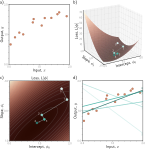
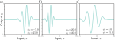
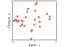
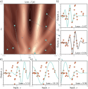
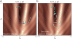
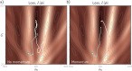
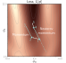
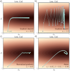
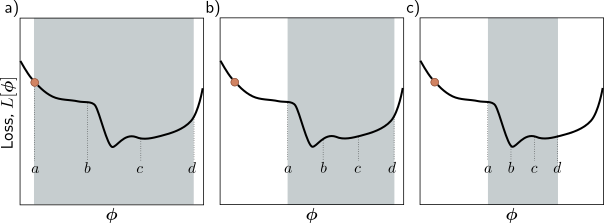
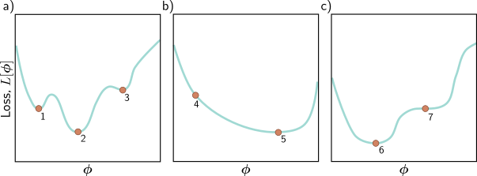

Gradient Descent

Gradient descent for the linear regression model. a) Training set of I = 12 input/output pairs {xi, yi}. b) Loss function showing iterations of gradient descent. We start at point 0 and move in the steepest downhill direction until we can improve no further to arrive at point 1. We then repeat this procedure. We measure the gradient at point 1 and move downhill to point 2 and so on. c) This can be visualized better as a heatmap, where the brightness represents the loss. After only four iterations, we are already close to the minimum. d) The model with the parameters at point 0 (lightest line) describes the data very badly, but each successive iteration improves the fit. The model with the parameters at point 4 (darkest line) is already a reasonable description of the training data.

Gabor model. This nonlinear model maps scalar input x to scalar output y and has parameters ϕ = [ϕ0, ϕ1]T . It describes a sinusoidal function that decreases in amplitude with distance from its center. Parameter ϕ0 ∈ R determines the position of the center. As ϕ0 increases, the function moves left. Parameter ϕ1 ∈ R+ squeezes the function along the x-axis relative to the center. As ϕ1 increases, the function narrows. a–c) Model with different parameters. (Interactive figure)

Training data for fitting the Gabor model. The training dataset contains 28 input/output examples {xi, yi}. These data were created by uniformly sampling xi ∈ [−15, 15], passing the samples through a Gabor model with parameters ϕ = [0.0, 16.6]T , and adding normally distributed noise.

Loss function for the Gabor model. a) The loss function is non-convex, with multiple local minima (cyan circles) in addition to the global minimum (gray circle). It also contains saddle points where the gradient is locally zero, but the function increases in one direction and decreases in the other. The blue cross is an example of a saddle point; the function decreases as we move horizontally in either direction but increases as we move vertically. b–f) Models associated with the different minima. In each case, there is no small change that decreases the loss. Panel (c) shows the global minimum, which has a loss of 0.64. (Interactive figure)

Gradient descent vs. stochastic gradient descent. a) Gradient descent with line search. As long as the gradient descent algorithm is initialized in the right “valley” of the loss function (e.g., points 1 and 3), the parameter estimate will move steadily toward the global minimum. However, if it is initialized outside this valley (e.g., point 2), it will descend toward one of the local minima. b) Stochastic gradient descent adds noise to the optimization process, so it is possible to escape from the wrong valley (e.g., point 2) and still reach the global minimum.

Alternative view of SGD for the Gabor model with a batch size three. a) Loss function for the entire training dataset. At each iteration, there is a probability distribution of possible parameter changes (inset shows samples). These correspond to different choices of the three batch elements. b) Loss function for one possible batch. The SGD algorithm moves in the downhill direction on this function for a distance that is determined by the learning rate and the local gradient magnitude. The current model (dashed function in inset) changes to better fit the batch data (solid function). c) A different batch creates a different loss function and results in a different update. d) For this batch, the algorithm moves downhill with respect to the batch loss function but in the locally uphill direction with respect to the global loss function in panel (a). This is how SGD can escape local minima.

Figure 6.7 Stochastic gradient descent with momentum. a) Regular stochastic descent takes a very indirect path toward the minimum. b) With a momentum term, the change at the current step is a weighted combination of the previous change and the gradient computed from the batch. This smooths out the trajectory and increases the speed of convergence.

Nesterov accelerated momentum. The solution has traveled along the dashed line to arrive at point 1. A traditional momentum update measures the gradient at point 1, moves some distance in this direction to point 2, and then adds the momentum term from the previous iteration (i.e., in the same direction as the dashed line), arriving at point 3. The Nesterov momentum update first applies the momentum term (moving from point 1 to point 4) and then measures the gradient and applies an update to arrive at point 5.

Adaptive moment estimation (Adam). a) This loss function changes quickly in the vertical direction but slowly in the horizontal direction. If we run full-batch gradient descent with a learning rate that makes good progress in the vertical direction, then the algorithm takes a long time to reach the final horizontal position. b) If the learning rate is chosen so that the algorithm makes good progress in the horizontal direction, it overshoots in the vertical direction and becomes unstable. c) A straightforward approach is to move a fixed distance along each axis at each step so that we move downhill in both directions. This is accomplished by normalizing the gradient magnitude and retaining only the sign. However, this does not usually converge to the exact minimum but instead oscillates back and forth around it (here between the last two points). d) The Adam algorithm uses momentum in both the estimated gradient and the normalization term, which creates a smoother path.

Line search using the bracketing approach. a) The current solution is at position a (orange point), and we wish to search the region [a, d] (gray shaded area). We define two points b, c interior to the search region and evaluate the loss function at these points. Here L[b] > L[c], so we eliminate the range [a, b]. b) We now repeat this procedure in the refined search region and find that L[b] < L[c], so we eliminate the range [c, d]. c) We repeat this process until this minimum is closely bracketed.

Three 1D loss functions for problem 6.6.